Data Reliability focuses on the creation, execution, and review of rules and policies. However, the current process presents several points of friction, such as scattered navigation, inconsistent user experiences, and inefficient workflows. Addressing these issues is essential to improve clarity, usability, and customer satisfaction while ensuring seamless policy management across ADOC.
Contribution
Principle UX Designer, Interaction Design
Target Users
Data Engineers and Operations Teams
Products
Data Observability Platform
Timeline
4 months
The streamlined interface and reusable rule library significantly improved policy management efficiency.
Reduction in Setup Time
Faster Policy Creation
User Satisfaction
Streamlined navigation, enhanced AI integration, and simplified policy creation through reusable rule libraries.
Eliminated scattered entry points and duplicate policy execution pages while ensuring intuitive and consistent navigation paths.
Integrated AI-driven recommendations and natural language interfaces into policy creation workflows for intelligent and user-friendly experiences.
Simplified policy creation with a comprehensive library of pre-defined rules that users can easily adapt to their needs.
Native capabilities tied directly to original data assets, offering greater transparency and control over data quality.
Explore the streamlined policy workflow process through our intuitive interface.
Key design decisions that shaped the policy workflow experience.
Implemented a step-by-step approach to policy creation, revealing complexity only when needed. This reduced cognitive load and improved first-time user success rates.
Added inline help and tooltips that appear based on user context, providing just-in-time assistance without overwhelming the interface.
Used color, spacing, and typography to create clear visual hierarchies, making it easier for users to scan and understand complex policy configurations.
Established reusable UI patterns across the platform, reducing learning time and improving task completion rates by 40%.

Our approach to understanding user needs and validating design decisions.
Conducted one-on-one interviews with data engineers and analysts, focusing on pain points, workflows, and unmet needs in policy management.
Identified critical friction points in the policy creation workflow and validated the need for streamlined navigation and reusable components.
Streamlined policy management reduced setup time by 50% and improved team productivity across the organization.
Improved user experience led to higher adoption rates and better utilization of data quality features.
By redesigning the policy workflow, we significantly improved operational efficiency, reduced setup time, and increased user satisfaction. The streamlined interface and reusable rule library enabled faster adoption of pre-defined rules, ensuring more consistent application of data quality standards across organizations.
Discover other innovative solutions in data management and user experience design.
View All Projects Data Prep for AI-Driven Enterprises
Data Prep for AI-Driven Enterprises Mobile Data Observability
Mobile Data Observability Copilot for Augmented HR
Copilot for Augmented HR Cross-platform Recommendations
Cross-platform Recommendations Copilot Observability Experience
Copilot Observability Experience Feature Discovery
Feature Discovery